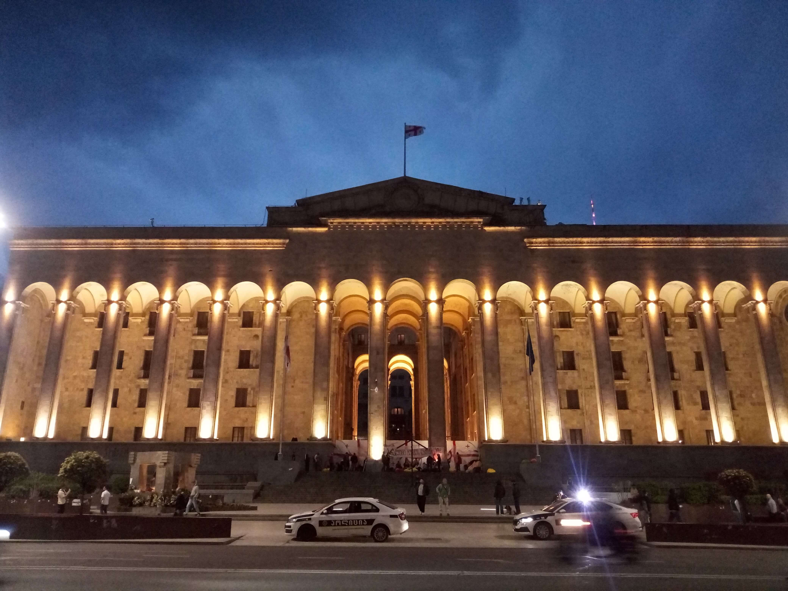

City View
Tbilisi’s cityscape is a fascinating reflection of Georgia’s history, culture, and changing identity. Set along the banks of the Kura River and surrounded by hills, the city offers a remarkable combination of historic architecture, colorful rooftops, winding streets, and modern urban landmarks. From elevated viewpoints, the landscape reveals the contrast between the traditional neighborhoods of Old Tbilisi and the city’s expanding contemporary skyline. The balconies, church towers, bridges, and buildings spread across the hills create a distinctive atmosphere that makes Tbilisi instantly recognizable. Each viewpoint offers a different perspective on the city, revealing details that are easy to miss while walking through its busy streets. These photographs capture my personal travel memories of Tbilisi, focusing on its urban landscape, architectural character, and the views that make the Georgian capital such a memorable place.
My Photo Gallery
Explore my personal photographs and travel memories from Tbilisi.
View All Photos ↗